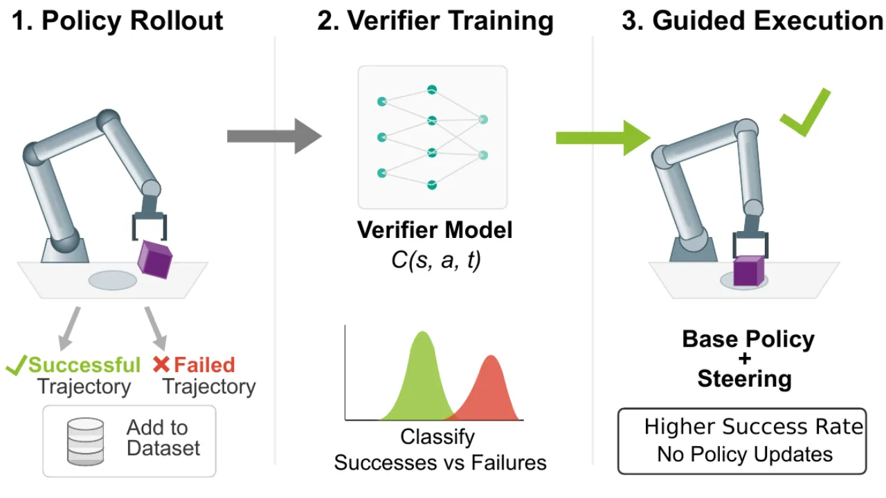
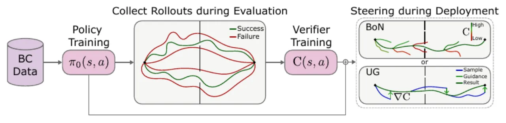
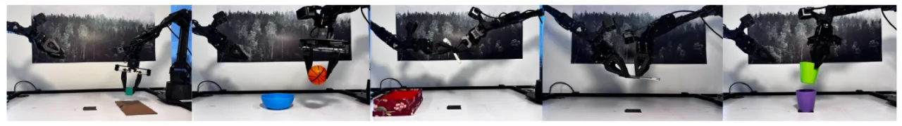
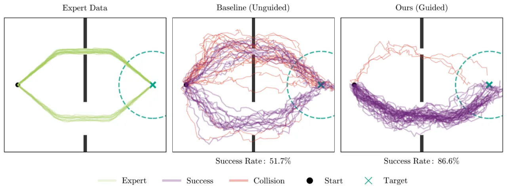
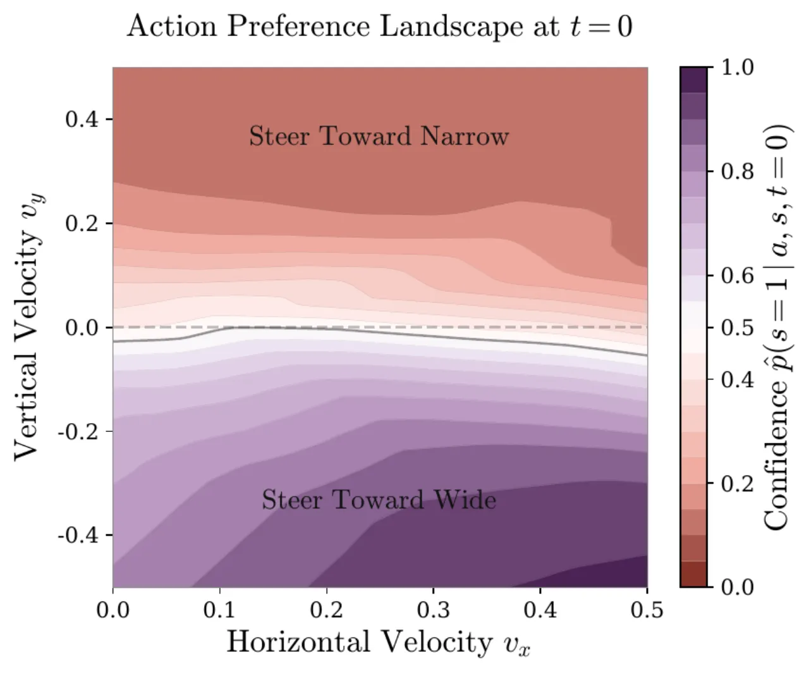

Behavior Cloning (BC) 策略往往在需要精准操作的关键接触点上失败。UF-OPS 提出一种 update-free 框架：收集策略初始评估产生的成功与失败轨迹，训练轻量级 verifier 对 (state, action) 的成功可能性打分，然后在推断时用 verifier 将策略推向 得分更高的动作——全程不修改 base policy 参数。在 5 个真实双臂操作任务上平均提升成功率 49%。
BC 策略在真实操作中表现出明显的脆弱性（brittleness），失败往往集中在需要精准动作的 fine-grained 交互点上。现有改进方案——如 fine-tuning、额外数据采集——代价高昂， 且可能导致灾难性遗忘（catastrophic forgetting），对 black-box 扩散策略更是难以直接适用。
"failures contain crucial information about bottleneck states that require precise manipulation… [we] leverage the policy's own evaluation data to improve its performance."

UF-OPS 分四步运作：① 在专家数据上训练 BC 策略；② 收集成功与失败的 rollout； ③ 训练 verifier 对 (st, at, t) 的成功可能性打分； ④ 在执行时用 verifier 配合 steering 策略引导动作选择。

Verifier 以状态-动作-时间步三元组 (st, at, t) 为输入，输出成功概率。 论文提出两种互补的 verifier 类型：
训练二分类器预测轨迹是否来自成功 rollout。损失函数结合 BCE 与辅助对比损失：
L = LBCE + λaux · Laux
（λaux = 0.1，margin m = 1.0）
对比损失 Laux = max(0, ε − ||z(s⁺,a⁺,t⁺) − z(s⁻,a⁻,t⁻)||)² 鼓励成功与失败样本的嵌入在特征空间中分离。
估计折扣后的剩余成功回报：
Q(st, at, t) = γ^(T−t) · rT
使用稀疏最终状态奖励与指数折扣，无需 bootstrapping，避免价值估计的误差传播。
从策略采样 N 个候选动作，选取 verifier 得分最高者：
a* = argmaxa ∈ A V(st, at, t)
大多数实验取 N = 10。适用于任意 black-box 策略。
对 diffusion policy 在去噪过程中施加 verifier 梯度（Forward Universal Guidance）：
â⁰t ← â⁰t + λ∇â₀ log C(st, â⁰t, t)
λ 按任务调整（0.05–0.8）。需要可微策略，但能在连续空间中更精细地引导动作分布。
低维输入：双 2-层 encoder（观测/动作）+ sinusoidal 时间步嵌入（dim=64）+ 2-block MLP （linear-layernorm-ReLU-dropout 0.5）。图像输入：带 spectral norm 的 encoder + 噪声增强（std=0.02，仅训练时）+ 冻结的 base policy vision encoder，时间嵌入 dim=128–256。
实验覆盖三个层次：教学性导航任务（验证原理）、单任务仿真（Robomimic）、 多任务 VLA 仿真（Libero），以及 5 个真实 Aloha 双臂操作任务。 基线包括 SAILOR、DSRL、V-GPS 等，均在相同 base diffusion policy 上评测。

每个任务约 60 条评估轨迹用于 verifier 训练，每种方法评测 20 次（20 steered evaluations）：
| 任务 | Base Policy | C×BoN | Q×BoN | 最大提升 |
|---|---|---|---|---|
| Block pick-place | 40% | 80% | 75% | +40 pp |
| Ball-bowl | 50% | 90% | 85% | +40 pp |
| Transport (hammer) | 55% | 90% | 85% | +35 pp |
| Pen-cap | 30% | 95% | 100% | +70 pp |
| Stack-cups | 80% | 95% | 95% | +15 pp |
| 任务 | Base | SAILOR | DSRL | V-GPS | Q×BoN | C×BoN | Q×CG | C×CG |
|---|---|---|---|---|---|---|---|---|
| Transport (low dim) | 56.6±3.07 | — | 24.8±9.0 | — | 59.6±3.04 | 62.7±3.00 | 66.9±2.92 | 64.7±3.0 |
| Square (low dim) | 78.2±2.56 | — | 74±6.1 | — | 85.1±2.2 | 86.0±2.2 | 81.7±2.4 | 85.5±2.2 |
| Transport (image) | 58.1±3.06 | 5.9±1.46 | — | — | 65.7±2.94 | 71.9±2.79 | 62.5±3.0 | 60.7±3.03 |
| Square (image) | 70.1±2.84 | 45.1±3.08 | — | 53.2±3.09 | 75.9±2.7 | 83.5±2.3 | 76.4±2.63 | 77.6±2.6 |
注意：SAILOR 在图像 Transport 任务上仅得 5.9±1.46%，远低于 base policy 的 58.1%， 说明 off-policy verifier 的迁移失败。UF-OPS 全面优于或持平 base policy。
| 方法 | 平均成功率 | vs. Base |
|---|---|---|
| Base | 25.5% | — |
| Q×BoN | 56.3% | +30.8 pp |
| Q×CG | 75.3% | +49.8 pp |
Q×CG 在单个任务上提升最高达 74.6 pp（task43：9.9% → 84.5%）， 最低 14.1 pp（task26：5.9% → 20.0%）。

在低维 Transport 任务上，加入对比损失（λ=0.1）将 C×BoN 从 56.0±3.08 提升至 62.7±3.00； 在 Square 任务上效果相当（85.5 vs 86.0），说明对比损失对难度更高的任务帮助更大。
用不同数据集训练的策略（PH→MH 或 MH→PH 交叉）的 verifier 无法稳定提升性能， 多数情况与 base policy 持平甚至略低，证实了 on-policy 数据的必要性。

"verifiers are trained on all downstream tasks and we do not evaluate verifier generalization beyond training tasks." 即当前 verifier 针对每个任务单独训练，跨任务迁移能力尚未探究。
"applying this work to real still maintains a small overhead of manual labeling of successful and failed rollouts." 在真实机器人上，需要人工判断每条轨迹是成功还是失败后才能训练 verifier， 带来一定的标注成本。
"specifically classifier guidance as a method of steering is proven to be very sensitive to guidance strength, which is a free hyperparameter tunable on a per-task level. In addition, tuning this in real potentially poses some safety risks." 引导强度 λ 需要逐任务调整， 且在真实机器人上调参本身存在安全风险。